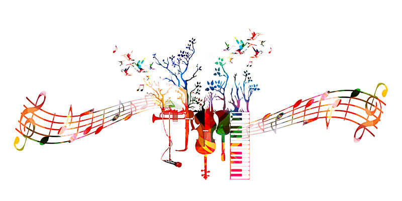

The second poem I've decided to add to my album A Dream Within a Dream - Orchestral Music Inspired by American Poetry, is Wisdom, by Sara Teasdale.
Taken from Poetry Foundation website:
"Sara Teasdale received public admiration for her well-crafted lyrical poetry which centered on a woman's changing perspectives on beauty, love, and death. Many of Teasdale's poems chart developments in her own life, from her experiences as a sheltered young woman in St. Louis, to those as a successful yet increasingly uneasy writer in New York City, to a depressed and disillusioned person who would commit suicide in 1933. Although many later critics would not consider Teasdale a major poet, she was popular in her lifetime with both the public and critics. She won the first Columbia Poetry Prize in 1918, a prize that would later be renamed the Pulitzer Prize for poetry."
I would like to share with you about my choice of Teasdale's poem. The original orchestral arrangement of this poem incorporated a four part choir. It was composed about three years ago, intended to open my 600 Chariots album. I recorded the vocals to the sublime description of the completion of creation at the beginning of Genesis 2: "And there was evening, and there was morning the six-day..." and the song was complete. The reason I kept postponing the inclusion of this song in 600 Chariots is that I wasn't satisfied with the digital choir sound.
While still looking for a better sound, I decided that 600 Chariots is complete and started working on this new album by composing Edgar Allan Poe's poem A Dream Within a Dream, which became the title of this album in the making.
Now I was looking for another poem to try to bring to life using my already existing orchestral arrangement, written by an American legendary poet, in the public domain. Looking for the right one, I literally went through hundreds of poems online and at Barnes and Noble over a hot latte. It had to match the melodic line as well as suit the orchestration style of classical music.
When I read Teasdale's poem, Wisdom, it immediately clicked. I revised the orchestration getting rid of the choir, switching it with strings, tweaked the melodic line just a bit, and bingo!
Critics found much of Teasdale's poetry to be "unsophisticated but full of musical language and evocative emotion." It might be unsophisticated, but I believe it's immensely profound.
It was a night of early spring,
The winter-sleep was scarcely broken;
Around us shadows and the wind
Listened for what was never spoken.
Though half a score of years are gone,
Spring comes as sharply now as then—
But if we had it all to do
It would be done the same again.
It was a spring that never came;
But we have lived enough to know
That what we never have, remains;
It is the things we have that go.
Here is my suggested analysis of this poem. Each of its three verses seems to indicate a different stage in a person's life, through the manner spring is perceived at each of these three stages.
In the first verse, "a night of early spring" might indicate the earliest stage in life. "The winter-sleep scarcely broken" might be a metaphor for a child in his mother's womb, just about to be born. Life's challenges and resourcefulness appears in this verse as shadows and wind. They are on guard, "attentive". Waiting to seize control over the first utterance of words which have not yet been spoken, right before they mature. Right before ideas crystallize and materialize.
In the second verse, spring, which was depicted in the first verse as pregnant with possibilities, is now a routine. Spring comes and it is experienced in the exact same way year after year. Now "half a score of years are gone." At midlife, at the peak of our existence, there's a vain and valiant conviction that if one's life lived from the start, it shouldn't be any different.
In the third verse, at an old age, spring doesn't come anymore. A sense of renewal is deprived. Nevertheless, naturally, true wisdom comes instead with the passing years, with the realization that the things we have, go. If it's power, position or wealth, it vanishes, and therefore completely loses its significance. What we never had: a beautiful sunset, the mystery of life and death, the prospect there is a God, they do remain forever.